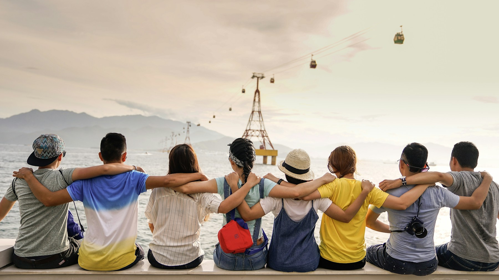

İMAN · ŞUUR · EMЕK
Birlikte yetişir,
birlikte değiştiririz.
İnancıyla kök salan, ilmiyle gelişen, emeğiyle geleceğe yön veren bir gençlik için bir aradayız.

KARDEŞLİKLE BÜYÜR.
birlikte! ↗
BİZ KİMİZ?
Köklerimizden güç,
gençliğimizden umut.
Millî Gençlik Derneği olarak ahlakı, maneviyatı ve ilmi merkeze alan bir gençlik anlayışını yaşatıyoruz. Gençlerin kendini geliştirebildiği, birlikte ürettiği ve toplum için sorumluluk aldığı buluşmaların adresiyiz.
BİR FİKİRDEN BİR HAREKETE
Gençliğin her alanında.
AYNI İDEAL, FARKLI ŞEHİRLER
Size en yakın Millî Gençlik.
Haritadan ilinizi seçin.
Teşkilatınızla tanışın.
İllere tıklayın veya listeden seçim yapın.
ORTAK ŞUUR, ORTAK SORUMLULUK
Yönetimimiz

MİLLÎGENÇLİKFİKİR · KÜLTÜR · GENÇLİK
İman. Şuur. Emek.
GENÇLİĞİN SESİ
Okuyan, düşünen,
üreten bir gençlik.
Fikirden kültüre, bilimden sanata… Millî Gençlik yayınlarıyla düşünce dünyamızı birlikte zenginleştiriyoruz.
BİR GENÇ İÇİN, BİR GELECEK İÇİN
İyiliği birlikte büyütelim.
Gençlik çalışmalarımıza destek olun; bu yolculukta sizin de emeğiniz olsun.
TANIŞALIM
Bir merhaba ile başlar.
Gönüllülük, çalışmalarımız ve il teşkilatlarımız hakkında bize ulaşın.